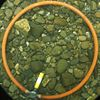

bedload
attribute

Source: Wikipedia
Wikipedia Page (Something wrong with this association? Let us know.)
Wikidata Page (Something wrong with this association? Let us know.)
Occurs in:
- drainage-basin_outlet_water_sediment~bedload_flowing__mass_rate
- drainage-basin_outlet_water_sediment~bedload_flowing__volume_rate
- channel_water_sediment~bedload__mass-per-volume_density
- channel_water_sediment~bedload_flowing__mass_rate
- channel_water_sediment~bedload_flowing__volume_rate
- channel_water_sediment~bedload~immersed_grain__weight